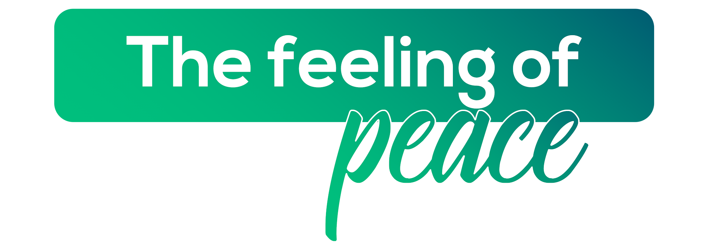

The Feeling of Peace
A planned city across the harbour — Navi Mumbai offers Mumbai's ambition and opportunity without the chaos, and nature without the distance.
Navi Mumbai is one of the world's largest planned cities — conceived in the 1970s as a planned township to decongest Mumbai, and today a thriving city of over 1.5 million people. Wider roads, cleaner streets, expansive parks, and Flamingo Sanctuary — Navi Mumbai offers a quality of urban life that its neighbour across the harbour can rarely match.
AIESEC in Navi Mumbai offers exchange participants a genuinely different side of the Mumbai Metropolitan Region — professional opportunities across APMC, Vashi's business hubs, and the emerging Kharghar corridor, combined with the feeling of peace that comes from a city that still has space to breathe.

What makes Navi Mumbai unforgettable.

Every winter, between 25,000 and 40,000 flamingos descend on the mudflats of Thane Creek — turning the tidal zone visible from Navi Mumbai's Palm Beach Road a sustained shade of pink that is difficult to believe until you see it. The flamingos arrive in October and stay through March, feeding on the algae-rich shallows. The viewing is best at low tide, from the Sewri or Airoli viewpoints, at dawn.

Navi Mumbai's planned commercial corridors — Vashi, Belapur CBD, Airoli, and Ghansoli — were designed to absorb Mumbai's overflow and have succeeded in creating a self-sufficient business district with excellent infrastructure. The corridor houses Indian and multinational companies across IT, pharmaceuticals, and financial services. For exchange participants, the professional environment is substantive without the commute costs of central Mumbai.

Central Park in Kharghar is one of the largest urban parks in India — 105 hectares of landscaped greenery, a golf course, and trekking paths in the surrounding hills accessible within 20 minutes of the main residential sectors. The Pandavkada Waterfall is at its most spectacular during and immediately after the monsoon. Navi Mumbai's green infrastructure is one of the clearest advantages of living in a planned city.

The APMC wholesale market in Vashi is the largest agricultural produce market in India — and arriving at dawn when the day's fruit and vegetables are being auctioned is an overwhelming sensory experience of scale and variety. The flower market, the spice wholesale section, and the onion-and-potato trading floor each have their own character. It is 20 minutes from most Navi Mumbai residential sectors and entirely open to the public.

The Navi Mumbai coastline — from Palm Beach Road in Nerul to the creek-front at Belapur — is the city's most livable feature: wide promenades, mangrove boardwalks, and evening views across Thane Creek. The Nerul Bird Sanctuary and the mangroves near Airoli add ecological value to what is already a pleasant built environment. Cycling the Palm Beach Road at sunrise is the best way to start a day in Navi Mumbai.

Navi Mumbai's food diversity reflects its demographics — engineers from Andhra, traders from Gujarat, professionals from Tamil Nadu, and old Maharashtrian fishing families all eating at very different kinds of restaurants in adjacent sectors. The result is a genuinely varied food scene without the premium pricing of South Mumbai. Vashi's restaurant street and the sector markets provide most of what you need.

Living in Navi Mumbai means being 30-40 minutes from central Mumbai's best-known sites — the Gateway, Dharavi, Colaba, and the film districts of Andheri — while also having the Alibaug coast, Matheran, and the Karnala Bird Sanctuary as day-trip options in the other direction. The Harbour Line rail and BEST buses make these connections genuinely convenient. Navi Mumbai's geography is one of its least-appreciated advantages.

Seawoods Grand Central is one of the largest malls in India — a mixed-use complex connected directly to Seawoods-Darave railway station and containing retail, food, entertainment, and residential towers in a single walkable development. It represents a kind of urban planning that Indian cities rarely achieve. For exchange participants, it provides the full social infrastructure of a modern commercial district without requiring a car.
Everything you need to know before arriving in Navi Mumbai.
Your local committee will help arrange accommodation close to your workplace. Options include shared flats and PG accommodations across Vashi, Kharghar, and Belapur.
Navi Mumbai is significantly more affordable than Mumbai proper. Budget ₹12,000–15,000 per month for transport, meals, and daily expenses.
Navi Mumbai is well served by local trains from Vashi, the Trans-Harbour line, and the Mumbai Metro's expanding network. Ola/Uber, NMMT buses, and share autos cover last-mile connectivity throughout the city.
You'll need a valid Indian visa for your exchange. Your local committee will provide a detailed visa guide and assist with the application process.
Navi Mumbai has strong healthcare infrastructure including MGM Hospital and multiple Apollo and Fortis clinics. Your local committee provides health protocols and around-the-clock emergency support.
Marathi is the official language; Hindi and English are widely spoken across Navi Mumbai's diverse population. The city's planned nature and strong corporate presence make English very accessible.
All major carriers — Jio, Airtel, Vi — offer excellent 4G/5G coverage across Navi Mumbai. SIMs are available at Mumbai Airport (serving both cities) and local mobile stores with your passport.
Navi Mumbai is relaxed and cosmopolitan. Dress modestly at religious sites and remove footwear at temple entrances. The city's planned layout makes it one of India's most straightforward urban environments to navigate and live in.
Two ways to experience Navi Mumbai through AIESEC.

A 6–8 week volunteering exchange program for ages 18–30, focused on sustainable development goals. Make a tangible impact on communities while experiencing the calm, purposeful energy of Navi Mumbai.

A professional internship experience in Navi Mumbai's growing corporate and IT corridors. Gain real-world skills across Vashi and Belapur's expanding business ecosystem.
Your dedicated team in Navi Mumbai, ready to make your exchange exceptional.
Reach out to our national team for any questions about exchanges in Navi Mumbai.


